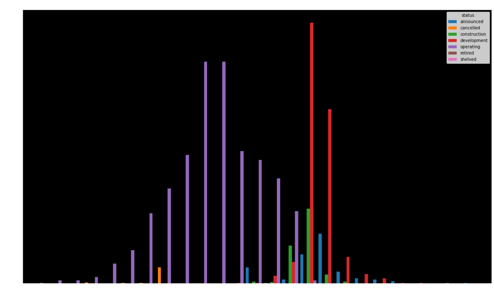
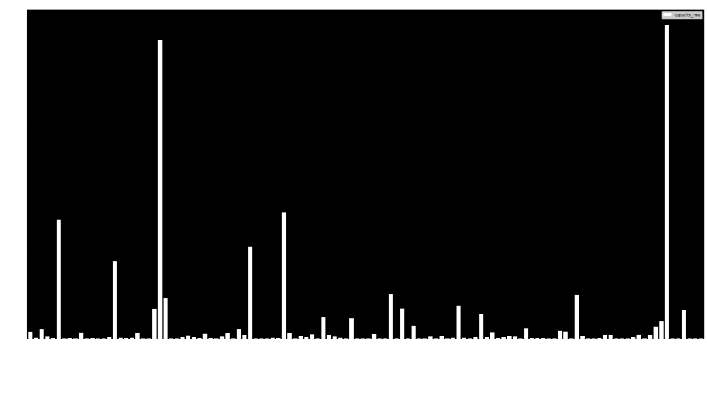

Solar Farm Density by Coordinates
The graph below shows us the density of solar farms geographically based on longitude & latitude.
Interestingly, by using this approach the data formed into a pseudo-world map, offering a clear vision of global solar.
We can see here that solar is most highly concentrated in Asia, Europe, and the Western United States.
Developing nations, many which would serve as great locations for solar energy production, are underutilized. With effective
investments into the necessary infrastructure solar farms could help these underserved communities immensely.
Regions
Solar Farm Development Over Time
Here we can see the promising future of global solar farms.
Solar farms reaching operation had a sharp growth period between 2013 and 2017.
The following several years showed more solar farms reaching operational status, but did represent a drop in quantity.
Beginning in 2020 however we see a huge spike in solar farms in development, peaking in 2022.
As our data looks to the future we see even more solar farms announced and in development,
showing that solar is a massive growth industry that can be expected to produce a significant return on investment.


The story told by this graph is illuminating given the context of the previous three graphs.
Here we can truly see prime areas for solar farms based on their MegaWatt outputs.
North American and China have the same MW output despite the Asia region having double the solar farms.
Even with the high output of India we can see that North America produces more energy per solar farm than China.
Additionally, despite the small number of solar farms the Oceania region contains, Australia’s MW output rivals that of India.
This data can help us identify both areas that are prime for solar farm investment and will produce the greatest return on that investment.
Solar Farms by Region
This bar chart tells an explicit story into which nations have best invested in solar energy.
Leading the pack at nearly 4000 total solar farms is Asia.
Following behind by a wide margin is North America, Europe, and South America.
Developing nations in Africa, Central America and the Caribbean lag behind dramatically, and represent huge potential growth markets for solar farm investment.
The Middle East also presents a potential market.
Low solar power investment is to be expected given the area’s reliance on fossil fuels, but given the climate of the area is a prime location for solar farms.
Our mission
At Helius we use big data to showcase areas prime for solar farm infrastructure by identifying underutilized regions.
Our goal is to assist developing nations in the adoption of solar technologies by matching solar companies with regions rich in land for solar production.